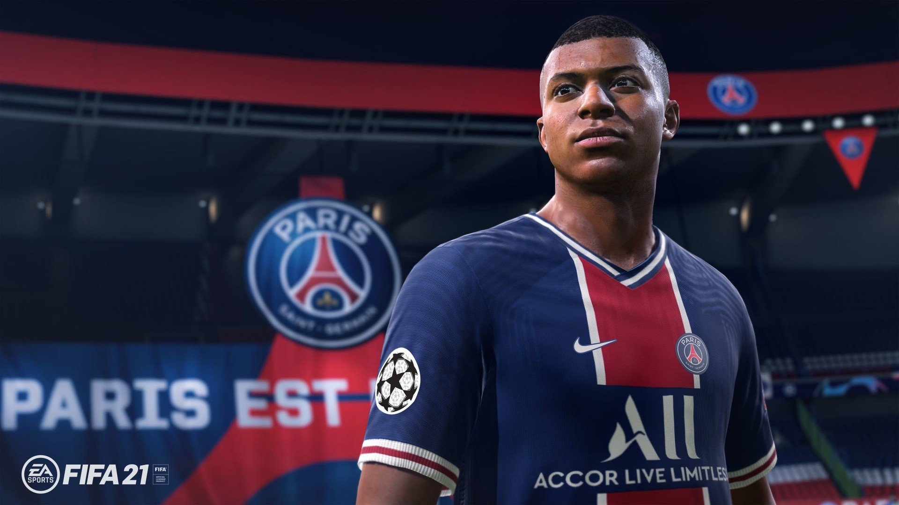
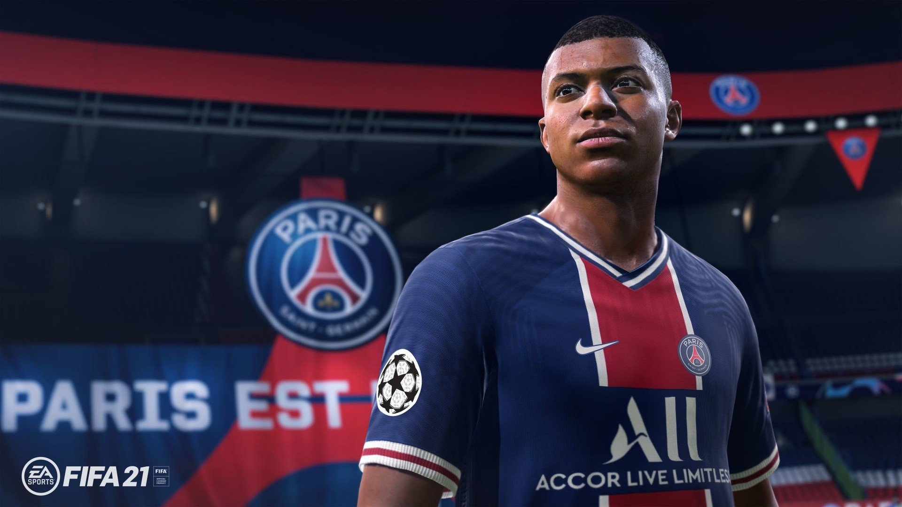
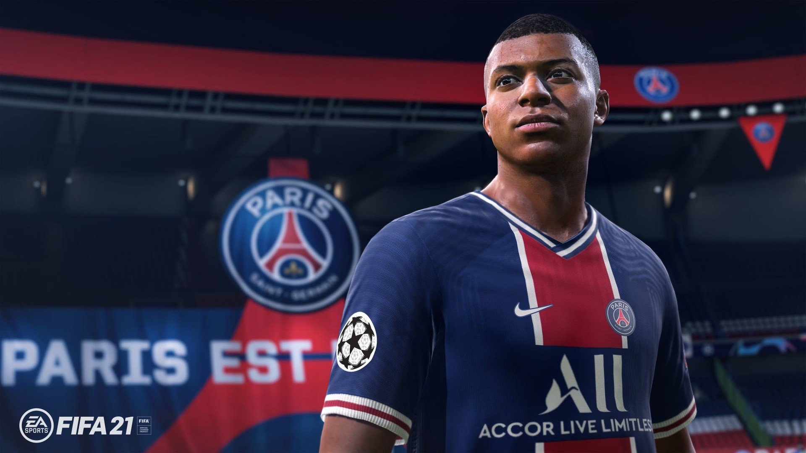
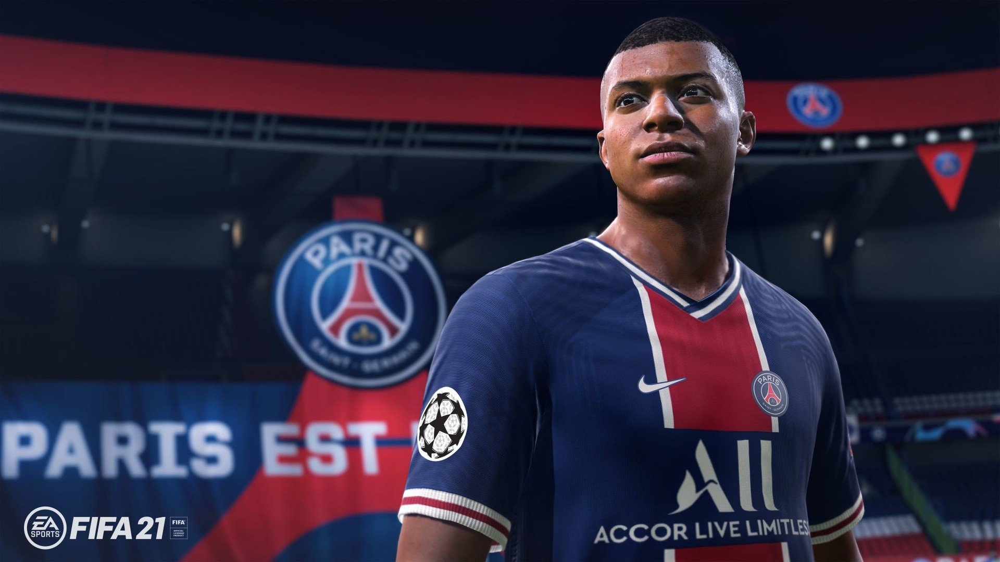

FIFA 21 stanowi kolejną odsłonę rozwijanego przez EA Sports cyklu symulatorów piłkarskich, którego historia sięga 1993 roku. Tytuł ponownie oferuje zabawę zarówno dla pojedynczego gracza, jak i dla fanów rozgrywek wieloosobowych. Jak co roku, w grze znajdziemy rzeczywistych zawodników oraz zespoły, które możemy poprowadzić do zwycięstwa w kolejnych meczach.
Produkcja wprowadza dwa nowe systemy SI. Pierwszy z nich, tzw. Positioning Personality, wpływa na rozstawienie zawodników na boisku. Dzięki niemu piłkarze unikają wchodzenia na pozycje spalone oraz sprawniej blokują podania przeciwników. Drugi – Creative Runs – zmienia sposób budowania ataku pozycyjnego. Ponadto zmiany zaimplementowano też w poruszaniu się zawodników z piłką. Dzięki kontekstowemu dryblingowi możemy teraz wykonywać precyzyjne i szybkie zwody aby oszukać rywali.
W rozgrywce wieloosobowej główną atrakcją pozostaje szalenie popularny tryb Ultimate Team. W tym roku został wzbogacony m.in. o specjalne wyzwania społecznościowe oraz możliwość kooperacyjnej gry o punkty ze znajomymi. W FIFA 21 pojawia się także, wprowadzony w poprzedniej odsłonie serii, tryb VOLTA Football. Można w nim rozgrywać mecze na boiskach ulokowanych w miejskim środowisku. Został on jednak rozbudowany i wzbogacony o nowe lokacje i bohaterów minikampanii fabularnej.